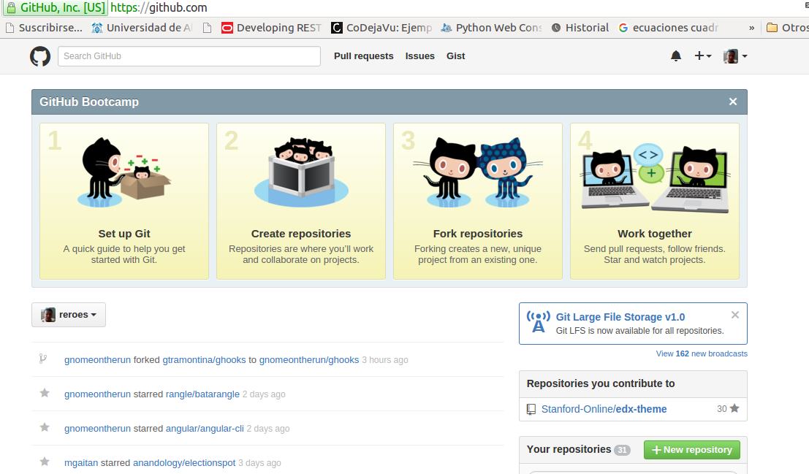
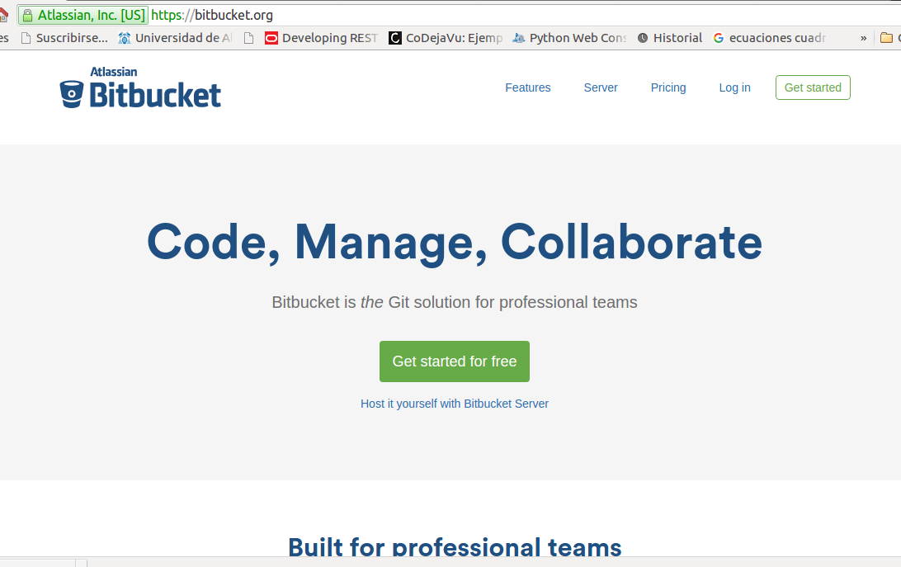
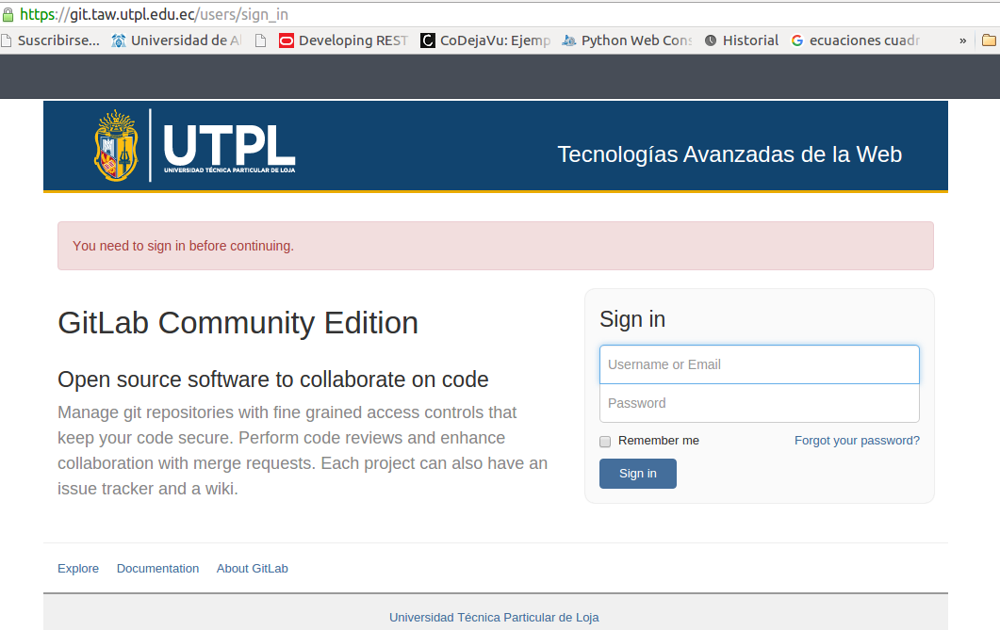
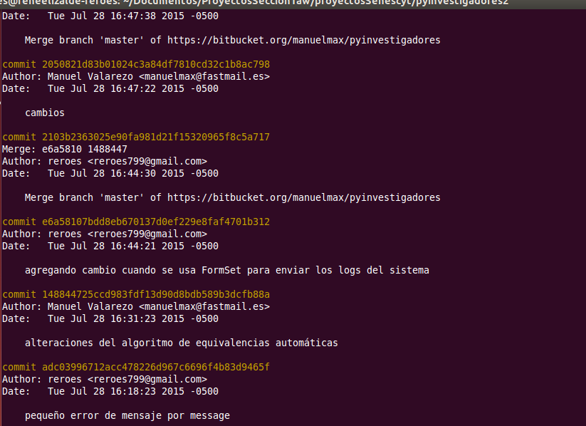

Control de Versiones de Código
no... hablamos de ...
- Dropbox
- OneDrive - Microsoft
- Drive - Gmail
Trabajemos nuestros códigos de manera profesional....
Control de Versiones de Código
- Se usa en equipos de desarrollo de Software
- Controlar los cambios que se realizan por parte del equipo desarrollador
- Control de accesos al código
- Se puede regresar a versiones anteriores
- Se puede generar ramas de proyectos .. proyectos paralelos
sistemas de control de versiones....
Sistemas de Control de Versiones
- SVN - Subversion
- Mercurial
- * GIT
en nuestra universidad usamos GIT
GIT
Es un software de control de versiones diseñado por Linus Torvalds, pensando en la eficiencia y la confiabilidad del mantenimiento de versiones de aplicaciones cuando éstas tienen un gran número de archivos de código fuente
Git se ha convertido desde entonces en un sistema de control de versiones con funcionalidad plena
en nuestra universidad usamos GIT
Plataformas para el Control de Versiones
github
- Se puede crear cuentas gratis
- Se puede crear proyectos públicos gratis
- Permite crear equipos de desarrollo
en nuestra universidad usamos GIT
github

Plataformas para el Control de Versiones
bitbucket
- Se puede crear cuentas gratis
- Se puede crear proyectos privados gratis
- Permite crear equipos de desarrollo
- Proyectos basados en Mercurial también los podemos administrar
en nuestra universidad usamos GIT
bitbucket

Plataformas para el Control de Versiones
gitlab
- Se puede crear cuentas gratis
- Se puede crear proyectos privados gratis
- Permite crear equipos de desarrollo
- Instalada en nuestros servidores
en nuestra universidad usamos GIT
gitlab

Control de cambios de nuestros proyectos

Primer Clase GIT
- Control de Versiones de código - Desarrollo profesional de software
- El desarrollo de la aplicación será manejada con GIT
- Para la admimistración con GIT-LAW-UTPL | enlace
- Trabajar en grupo
- Dejar evidencia
- Manejar el wiki
Proyecto Demo
- mkdir demodemo
- cd demodemo
- git init
- touch README.md
- git add README.md
- git commit -m "first commit"
- git remote add origin https://git.taw.utpl.edu.ec/reroes/demodemo.git
- git push -u origin master
Comandos Básicos
Usuario 1
- git clone / clonar el proyecto en nuestras máquinas
- git add . / git add (archivo) / agregar un archivo(s) al repositorio
- git commit -a -m "mensaje acorde a lo que se sube"
- git push / se suben los cambios al servidor (en nuestro caso al gitlab
Usuario 2
- git pull / baja los cambios del servidor a su local
Escenarios
Proyecto Individual.
- Crear repositorio en el entorno.
- Configurar repositorio en el máquina personal.
- Comenzar a trabajar en el repositorio local.
Escenarios
Proyecto Grupal
- Solo una persona del grupo crea el proyecto. (solo una)
- En el entorno agrega a los integrantes del grupo por niveles.
- La persona que inicio el proyecto, configura en su local el repositorio.
- Todos los integrantes del grupo hacen un checkout al proyecto. (todos la pueden ver al proyecto en sus cuentas)
- Se empieza a trabajar entre todos.
Escenarios
Antes de subir cambios, hacer un pull del repositorio.